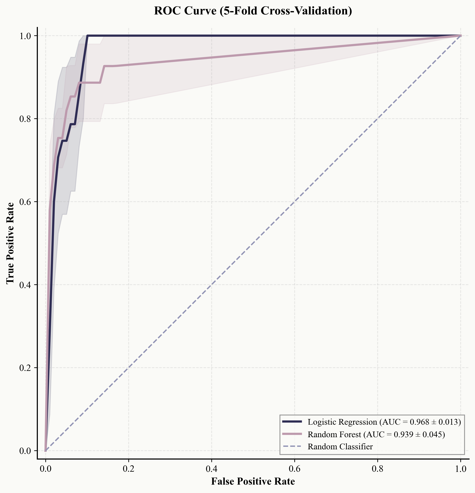

PU Learning
Modeling Happiness with Positive-Unlabeled Learning
The Problem with “Negative” Labels
Traditional binary classification requires both positive and negative labeled examples. Our dataset contains 28 happiness points marked by survey respondents and ~40,000 road sampling points with unknown happiness status. The tempting approach would be to treat all unlabeled points as “not happy”—but this fundamentally misrepresents the data.
The critical insight: unlabeled does not mean negative. Many road sampling points might also be happy locations—they simply weren’t identified in the survey. A beautiful park bench, a cozy café corner, a tree-lined street with afternoon sun—any of these might bring joy to someone, but if no survey respondent happened to mention them, they remain unlabeled. Training a standard classifier with all unlabeled points as negatives would systematically bias the model against places that are happy but unrecognized.
Positive-Unlabeled (PU) Learning addresses this by identifying “reliable negatives” from the unlabeled set—points that are genuinely unlikely to be happy places—and training classifiers using only these carefully selected negatives alongside the labeled positives.
#| eval: false
from scipy.spatial.distance import cdist
import numpy as np
class PULearningModel:
"""
Positive-Unlabeled Learning classifier for happiness prediction.
Uses distance-based reliable negative identification followed by
standard classification with class balancing.
"""
def __init__(self, reliable_neg_ratio=0.30):
"""
Parameters:
-----------
reliable_neg_ratio : float
Proportion of unlabeled samples to use as reliable negatives.
Higher values increase training set size but risk label noise.
"""
self.reliable_neg_ratio = reliable_neg_ratio
self.scaler = StandardScaler()Building the Feature Vector
We construct a feature vector combining visual and socioeconomic characteristics—what a person sees when standing at a location, and the broader neighborhood context that shapes how places “feel”:
#| eval: false
# Visual features from semantic segmentation
visual_features = [
'sky_ratio', # Sky visibility
'green_view_index', # Vegetation coverage
'building_ratio', # Built environment density
'road_ratio', # Road/sidewalk coverage
'vehicle_ratio', # Vehicle presence
'person_ratio' # Pedestrian presence
]
# Socioeconomic features from Census
census_features = [
'median_income', # Economic status
'poverty_rate', # Deprivation indicator
'pct_college', # Education level
'pct_white', # Racial composition
'median_age', # Age demographics
'pct_owner_occupied', # Housing tenure
'unemployment_rate' # Employment status
]
all_features = visual_features + census_featuresVisual features directly measure what a person sees. Prior research has shown that these characteristics correlate with perceived safety and pleasantness. Socioeconomic features capture neighborhood context that may not be directly visible—a clean street in a high-income area may feel different from an identical street in a high-poverty area due to ambient factors like noise, social activity, and maintenance levels. We intentionally excluded highly correlated features (using pct_college rather than separate counts for each degree level) to avoid multicollinearity issues in logistic regression.
Finding Reliable Negatives
Our approach identifies reliable negatives based on feature-space distance from positive examples. The intuition: points far from the positive centroid in feature space are unlikely to be latent positives.
#| eval: false
def identify_reliable_negatives(self, X_positive, X_unlabeled):
"""
Identify reliable negative samples using distance to positive centroid.
Intuition: Points far from the positive centroid in feature space
are unlikely to be latent positives.
"""
# Calculate centroid of positive samples
positive_centroid = X_positive.mean(axis=0)
# Calculate Euclidean distance from each unlabeled point to centroid
distances = cdist(X_unlabeled, [positive_centroid], metric='euclidean').flatten()
# Select most distant points as reliable negatives
n_reliable = int(len(X_unlabeled) * self.reliable_neg_ratio)
reliable_neg_indices = np.argsort(distances)[-n_reliable:]
# Also identify "suspect positives" (very close to positive centroid)
n_suspect = int(len(X_unlabeled) * 0.05)
suspect_pos_indices = np.argsort(distances)[:n_suspect]
return reliable_neg_indices, suspect_pos_indices, distancesWe chose 30% as the reliable negative ratio after considering several factors. Too few negatives limits training data; too many risks including latent positives. Urban planning literature suggests roughly 60-70% of city locations are “neutral”—neither particularly happy nor unhappy. Cross-validation performance plateaued around 25-35%.
The 5% suspect positive identification serves a dual purpose: these points are excluded from the reliable negative set as a safety margin, and they can be examined post-hoc to discover potentially overlooked happy locations.
#| eval: false
import matplotlib.pyplot as plt
from sklearn.decomposition import PCA
def visualize_sample_distribution(X_pos, X_unl, reliable_idx, suspect_idx):
"""
2D PCA visualization of sample distribution.
"""
# Combine and project to 2D
X_all = np.vstack([X_pos, X_unl])
pca = PCA(n_components=2)
X_2d = pca.fit_transform(X_all)
n_pos = len(X_pos)
fig, ax = plt.subplots(figsize=(10, 8))
# Plot each category
ax.scatter(X_2d[n_pos:][reliable_idx, 0], X_2d[n_pos:][reliable_idx, 1],
c='blue', alpha=0.3, s=10, label='Reliable Negative')
ax.scatter(X_2d[n_pos:][suspect_idx, 0], X_2d[n_pos:][suspect_idx, 1],
c='orange', alpha=0.5, s=20, label='Suspect Positive')
ax.scatter(X_2d[:n_pos, 0], X_2d[:n_pos, 1],
c='red', s=100, marker='*', label='Labeled Positive')
ax.legend()
ax.set_xlabel(f'PC1 ({pca.explained_variance_ratio_[0]:.1%} variance)')
ax.set_ylabel(f'PC2 ({pca.explained_variance_ratio_[1]:.1%} variance)')
ax.set_title('PCA Projection of Sample Distribution')
return figTraining the Models
We train two complementary classifiers. Logistic Regression provides interpretable coefficients showing the direction and magnitude of each feature’s effect. Random Forest can capture non-linear relationships and interactions that logistic regression misses.
#| eval: false
from sklearn.linear_model import LogisticRegression
from sklearn.ensemble import RandomForestClassifier
from sklearn.model_selection import StratifiedKFold, cross_val_score
def train_models(self, X_positive, X_unlabeled):
"""
Train PU Learning classifiers.
"""
# Scale features
X_all = np.vstack([X_positive, X_unlabeled])
self.scaler.fit(X_all)
X_pos_scaled = self.scaler.transform(X_positive)
X_unl_scaled = self.scaler.transform(X_unlabeled)
# Identify reliable negatives
reliable_idx, suspect_idx, distances = self.identify_reliable_negatives(
X_pos_scaled, X_unl_scaled
)
X_reliable_neg = X_unl_scaled[reliable_idx]
# Prepare training data
X_train = np.vstack([X_pos_scaled, X_reliable_neg])
y_train = np.array([1] * len(X_pos_scaled) + [0] * len(X_reliable_neg))
# Train models with class balancing
self.lr_model = LogisticRegression(
class_weight='balanced',
max_iter=1000,
random_state=42
)
self.lr_model.fit(X_train, y_train)
self.rf_model = RandomForestClassifier(
n_estimators=200,
max_depth=10,
class_weight='balanced',
random_state=42
)
self.rf_model.fit(X_train, y_train)
return X_train, y_trainClass weighting (class_weight='balanced') is essential. Even after PU Learning, we have a 28:~9,000 class ratio. Without weighting, the model would achieve high accuracy by simply predicting all points as negative.
Cross-validation strategy: We use 5-fold stratified cross-validation, ensuring each fold contains proportional representation of positive samples (about 5-6 per fold). This is the minimum viable setup given our small positive sample size.
Evaluating Performance
#| eval: false
from sklearn.metrics import roc_curve, auc
def plot_roc_curves(self, X_train, y_train):
"""
Generate ROC curves with 5-fold cross-validation.
"""
cv = StratifiedKFold(n_splits=5, shuffle=True, random_state=42)
fig, ax = plt.subplots(figsize=(8, 8))
mean_fpr = np.linspace(0, 1, 100)
lr_tprs = []
rf_tprs = []
for fold, (train_idx, val_idx) in enumerate(cv.split(X_train, y_train)):
X_tr, y_tr = X_train[train_idx], y_train[train_idx]
X_val, y_val = X_train[val_idx], y_train[val_idx]
# Logistic Regression
lr = LogisticRegression(class_weight='balanced', max_iter=1000)
lr.fit(X_tr, y_tr)
lr_prob = lr.predict_proba(X_val)[:, 1]
lr_fpr, lr_tpr, _ = roc_curve(y_val, lr_prob)
lr_tprs.append(np.interp(mean_fpr, lr_fpr, lr_tpr))
# Random Forest
rf = RandomForestClassifier(n_estimators=200, max_depth=10,
class_weight='balanced', random_state=42)
rf.fit(X_tr, y_tr)
rf_prob = rf.predict_proba(X_val)[:, 1]
rf_fpr, rf_tpr, _ = roc_curve(y_val, rf_prob)
rf_tprs.append(np.interp(mean_fpr, rf_fpr, rf_tpr))
# Plot mean curves
ax.plot(mean_fpr, np.mean(lr_tprs, axis=0),
label=f'Logistic Regression (AUC = {np.mean([auc(mean_fpr, t) for t in lr_tprs]):.3f})')
ax.plot(mean_fpr, np.mean(rf_tprs, axis=0),
label=f'Random Forest (AUC = {np.mean([auc(mean_fpr, t) for t in rf_tprs]):.3f})')
ax.plot([0, 1], [0, 1], '--', color='gray', label='Random')
ax.set_xlabel('False Positive Rate')
ax.set_ylabel('True Positive Rate')
ax.legend()
return fig
| Model | AUC | Std Dev |
|---|---|---|
| Logistic Regression | 0.968 | ±0.013 |
| Random Forest | 0.939 | ±0.045 |
Both models achieve strong discriminative performance, with Logistic Regression slightly outperforming Random Forest. An AUC of 0.968 means that if we randomly select one positive and one negative sample, the model correctly ranks them 96.8% of the time. Happiness points are indeed distinguishable from reliable negatives in feature space.
Why does the simpler model win? With only 28 positive samples, Random Forest’s flexibility becomes a liability—it can overfit to idiosyncratic patterns in the small positive set. Logistic regression’s stronger inductive bias (linear decision boundary) provides regularization that helps generalization. The variance comparison confirms this: logistic regression shows lower variance across folds (±0.013 vs ±0.045), indicating more stable performance.
What the Coefficients Tell Us
#| eval: false
def get_feature_importance(self, feature_names):
"""
Extract and format feature importance from both models.
"""
importance = pd.DataFrame({
'feature': feature_names,
'lr_coefficient': self.lr_model.coef_[0],
'rf_importance': self.rf_model.feature_importances_
})
importance['direction'] = importance['lr_coefficient'].apply(
lambda x: 'Positive (+)' if x > 0 else 'Negative (-)'
)
importance['lr_abs'] = importance['lr_coefficient'].abs()
return importance.sort_values('lr_abs', ascending=False)| Feature | LR Coefficient | Direction | RF Importance |
|---|---|---|---|
| pct_owner_occupied | -2.10 | Negative | 0.089 |
| poverty_rate | -1.28 | Negative | 0.076 |
| road_ratio | -1.23 | Negative | 0.082 |
| building_ratio | +1.00 | Positive | 0.095 |
| pct_college | +0.70 | Positive | 0.088 |
| sky_ratio | +0.58 | Positive | 0.091 |
| vehicle_ratio | -0.29 | Negative | 0.078 |
| person_ratio | -0.24 | Negative | 0.065 |
| median_income | +0.18 | Positive | 0.112 |
| green_view_index | +0.06 | Positive | 0.087 |
| median_age | -0.04 | Negative | 0.071 |
| unemployment_rate | -0.02 | Negative | 0.066 |
The strongest negative predictor is owner-occupancy rate (-2.10)—a counterintuitive finding. Areas with high homeownership are less likely to contain happiness points. High-ownership areas tend to be quiet residential suburbs with few destinations; happiness points may cluster in mixed-use, walkable areas that have more renters. This reflects a distinction between “good for living” and “feels happy to visit.”
Road ratio as negative predictor (-1.23) aligns with urban design principles: car-centric environments are less pleasant for pedestrians. Building ratio as positive predictor (+1.00) suggests dense areas have more amenities, activities, and social opportunities. Sky visibility (+0.58) supports the psychological value of openness in urban environments, even when controlling for building density.
Scoring the City
#| eval: false
def predict_happiness(self, df, feature_cols):
"""
Generate happiness predictions for all points.
"""
X = df[feature_cols].values
X_scaled = self.scaler.transform(X)
# Get probability scores
raw_probs = self.lr_model.predict_proba(X_scaled)[:, 1]
# Normalize to 0-1 scale
normalized = (raw_probs - raw_probs.min()) / (raw_probs.max() - raw_probs.min())
# Ensure labeled positives get score 1.0
if 'is_happy' in df.columns:
normalized[df['is_happy'] == 1] = 1.0
df['happiness_score'] = normalized
return dfAfter scoring all ~40,000 points:
| Score Range | Count | Percentage |
|---|---|---|
| 0.0 - 0.2 | ~9,000 | 30% |
| 0.2 - 0.4 | ~8,000 | 27% |
| 0.4 - 0.6 | ~7,000 | 23% |
| 0.6 - 0.8 | ~4,000 | 13% |
| 0.8 - 1.0 | ~2,000 | 7% |
The distribution is right-skewed, with most points receiving low happiness scores. This is expected—if happiness points were common, they wouldn’t be special. The ~2,000 points (7%) scoring above 0.8 represent locations sharing characteristics with labeled happiness points. These could be true latent positives—happy places not identified in the survey—or false positives that statistically resemble happy places but don’t evoke actual happiness. Manual validation of a random sample could help distinguish these cases.
What We’ve Built
The PU Learning approach successfully identifies features that distinguish happiness points. Distance-based reliable negative identification combined with class-balanced logistic regression achieves AUC = 0.968. The key positive factors are building density, college education rate, and sky visibility. The key negative factors are owner-occupancy rate, poverty rate, and road coverage. We’ve generated happiness scores for all ~40,000 sampling points, enabling city-wide mapping of predicted happiness.
The next section presents the full results and discusses what these patterns mean for understanding—and perhaps improving—urban environments.